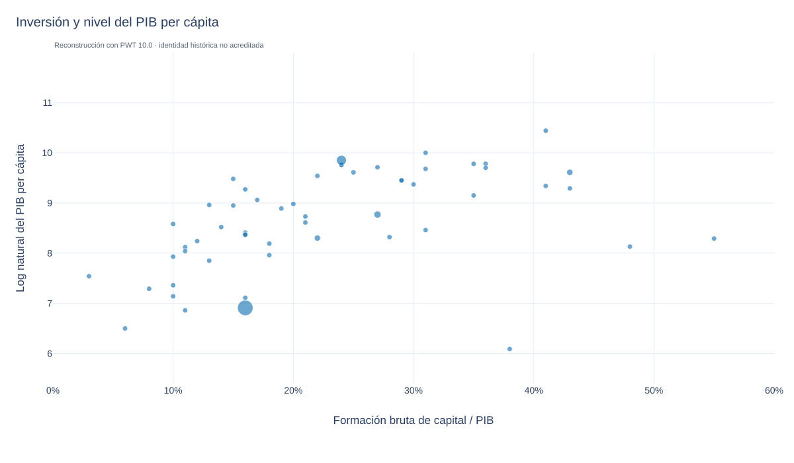
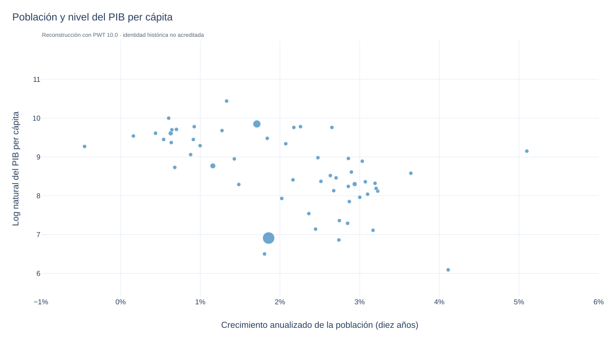
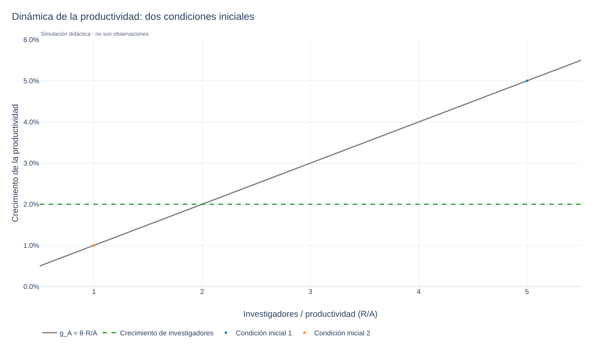
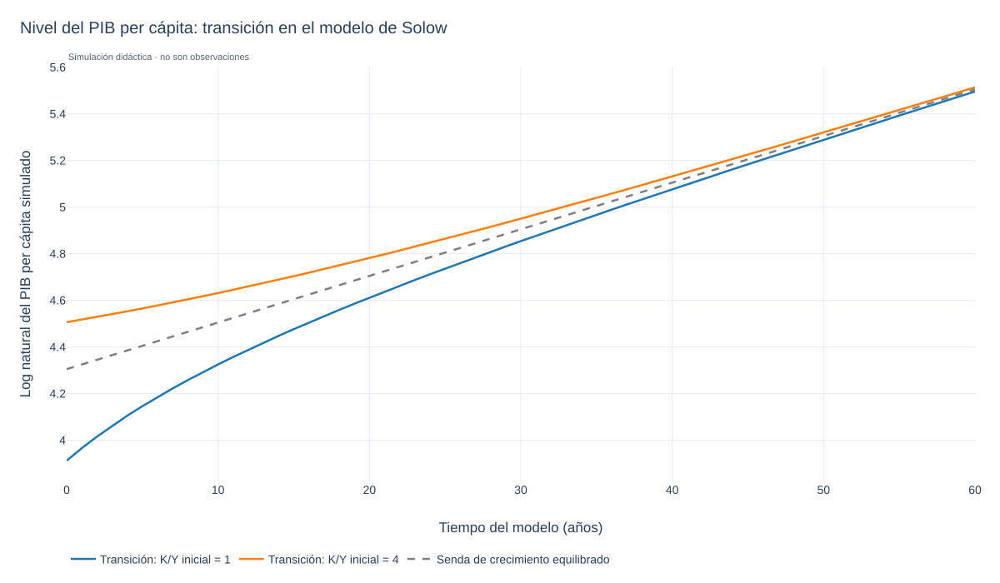
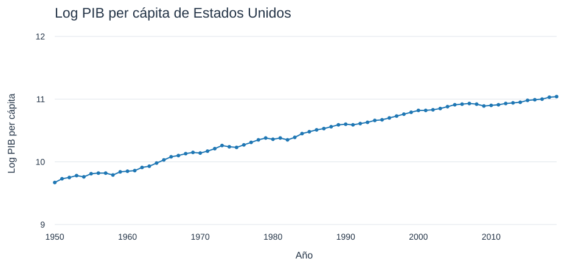
Vista local, datos y límites de la recuperación
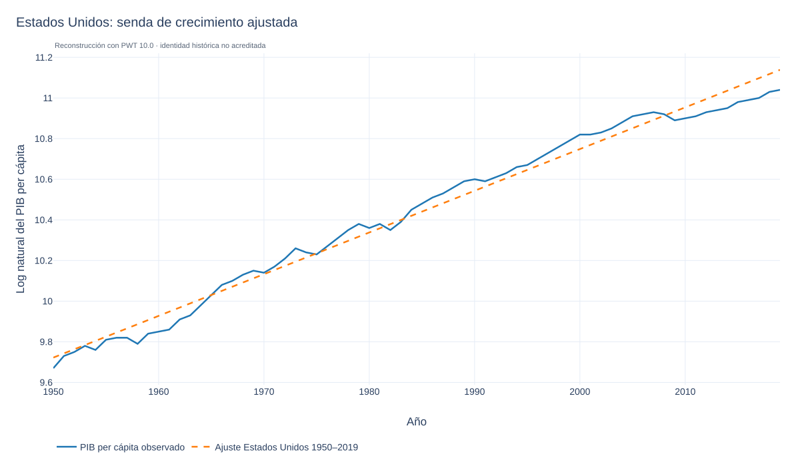
Especificación de la reconstrucción: La recta utiliza todo el periodo 1950–2019: pendiente anual logarítmica de aproximadamente 2.052%. Es un ajuste descriptivo.
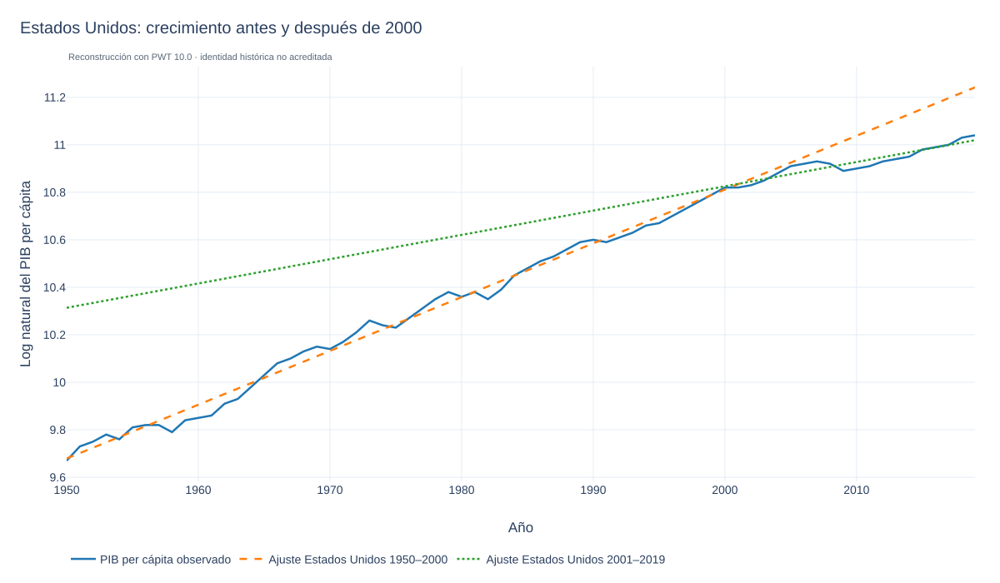
Especificación de la reconstrucción: La recta naranja usa 1950–2000 (2.2647% anual logarítmico); la verde, 2001–2019 (1.0228%). Prolongar las rectas fuera de esas ventanas no equivale a un pronóstico.
Estados Unidos
La reconstrucción BGP 1 ajusta una recta al logaritmo del PIB per cápita de 1950–2019. BGP 2 compara las rectas ajustadas a 1950–2000 (naranja) y 2001–2019 (verde).
Las rectas se estiman por mínimos cuadrados con PWT 10.0; sus pendientes son tasas logarítmicas medias ajustadas. Fuera de cada ventana son extrapolaciones descriptivas, no observaciones ni pronósticos.
¿La caída del PIB per cápita por debajo del antiguo BGP (naranja) refleja un cambio permanente en el nivel del PIB per cápita, o si se trata de una desviación temporal, como a fines de la década de 1950 y principios de la de 1960? Esta pregunta tiene enormes implicaciones para el nivel futuro del PIB per cápita.
Podemos representar la recta de 1950–2000 mediante la fórmula de Solow, midiendo t desde 1950. Es una calibración ilustrativa, no una estimación estructural:
\[ \ln y_t^{BGP} = \frac{\alpha}{1-\alpha} \left(\ln s_I - \ln(\delta + g_A + g_L) \right) + \ln A_0 + g_A t. \]
\(g_A = 0.022647\) (aproximadamente 2.2647% anual logarítmico).
\(\alpha \approx 0.3\) \(\delta \approx 0.05\)
\(g_L = 0.011874\) \(s_I = 0.247932\)
\[ 9.679118 \approx \frac{0.3}{1-0.3} \left(\ln 0.247932 - \ln(0.05 + 0.022647 + 0.011874) \right) + \ln A_0 \]
\[ \ln A_0 \approx 9.679118 - \frac{0.3}{1-0.3} \left(\ln 0.247932 - \ln(0.05 + 0.022647 + 0.011874) \right) \approx 9.217909. \]
\(A_0 \approx 10\,076\)
A_0 es una escala residual que hace compatible la tendencia ajustada con los supuestos del modelo; no representa unidades observables de tecnología.
Una comparación entre países requiere definiciones, unidades y parámetros coherentes; este A_0 calibrado no es directamente el índice de PTF publicado por PWT.
Alemania - BGP
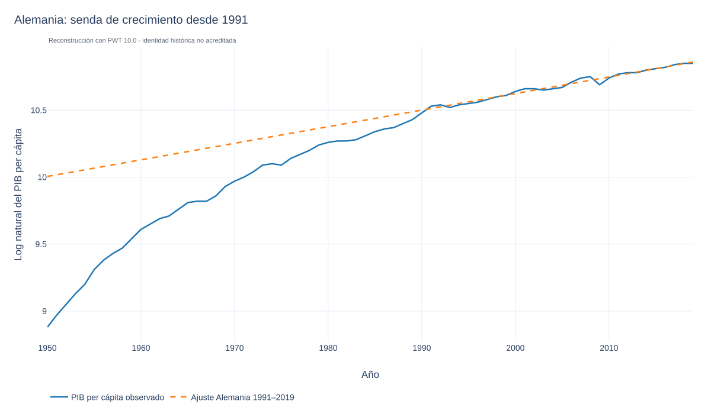
Especificación de la reconstrucción: La tendencia se ajusta a Alemania en 1991–2019; se dibuja sobre la serie disponible para distinguir ajuste y extrapolación.
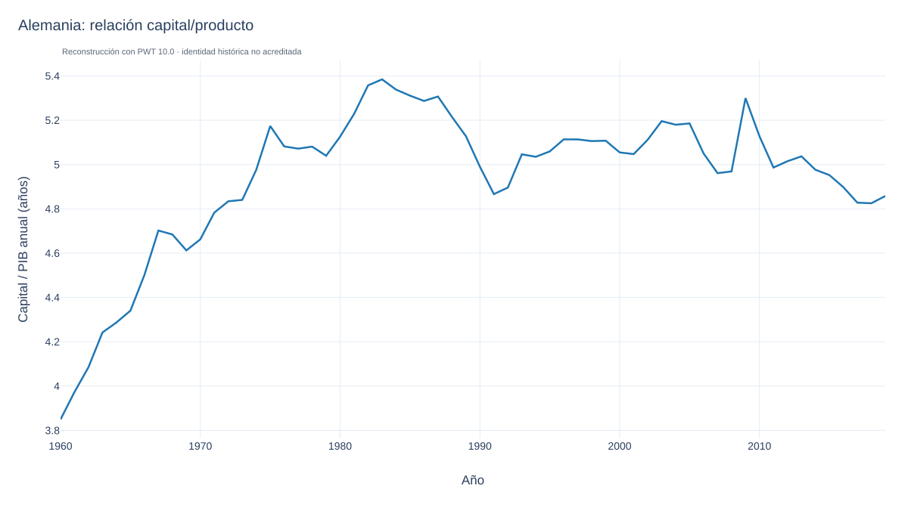
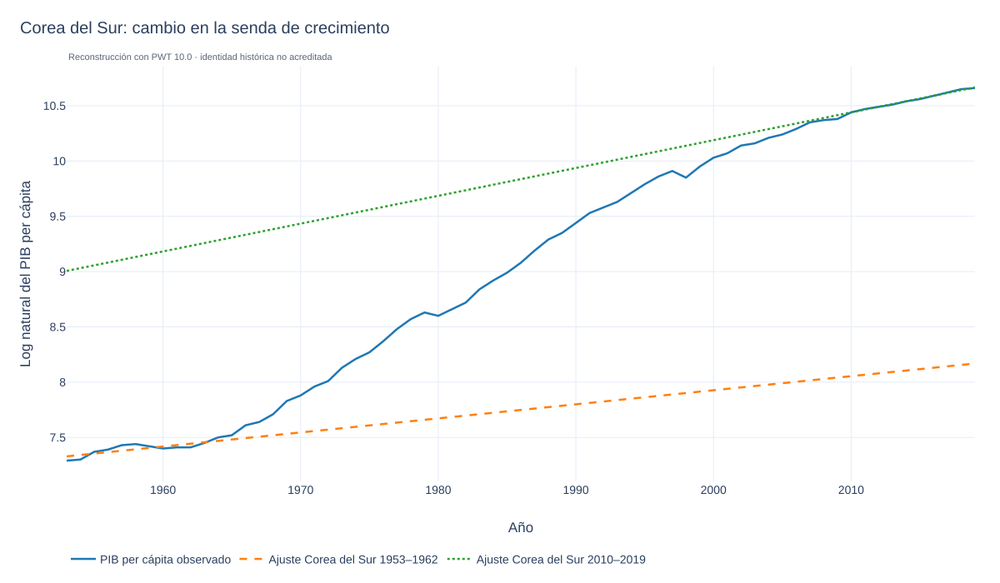
Especificación de la reconstrucción: Se comparan tendencias de Corea del Sur ajustadas a 1953–1962 y 2010–2019. Las rectas son referencias descriptivas, no observaciones del BGP.
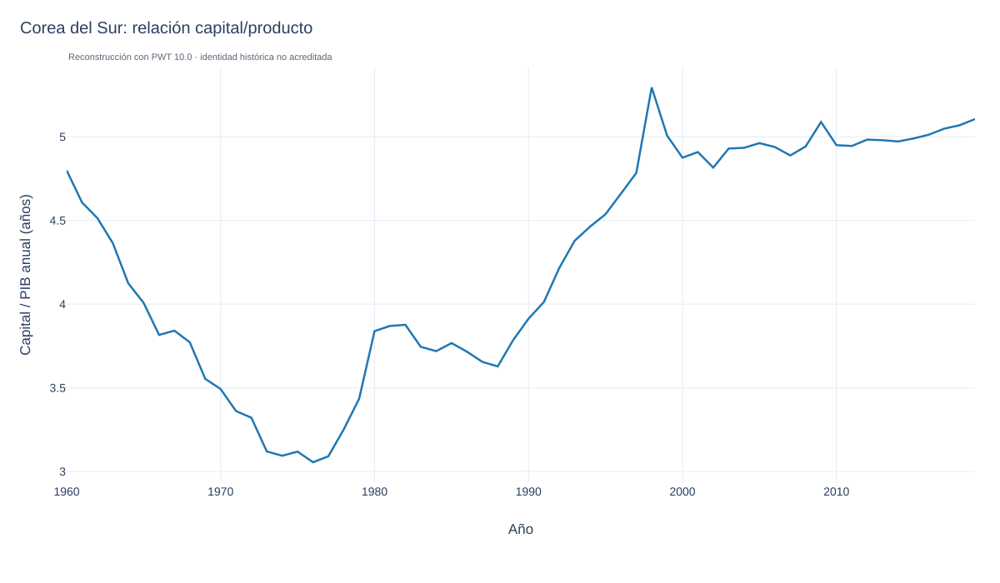
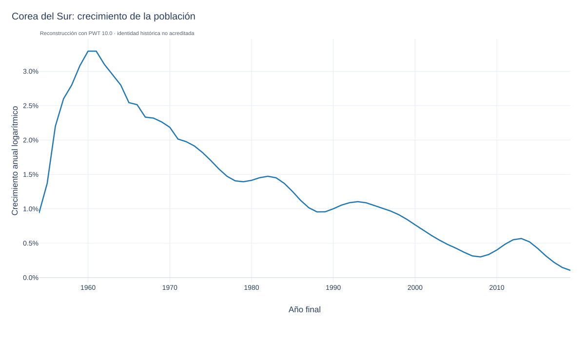
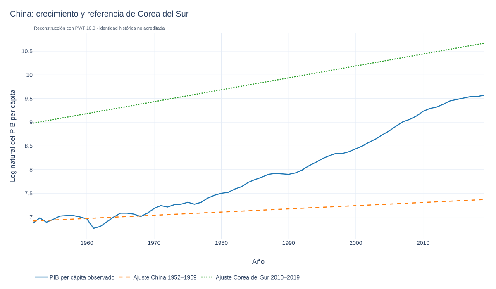
Especificación de la reconstrucción: La referencia temprana se ajusta a China en 1952–1969; la segunda recta usa Corea del Sur en 2010–2019. Es una comparación ilustrativa y no prueba convergencia a esa trayectoria.
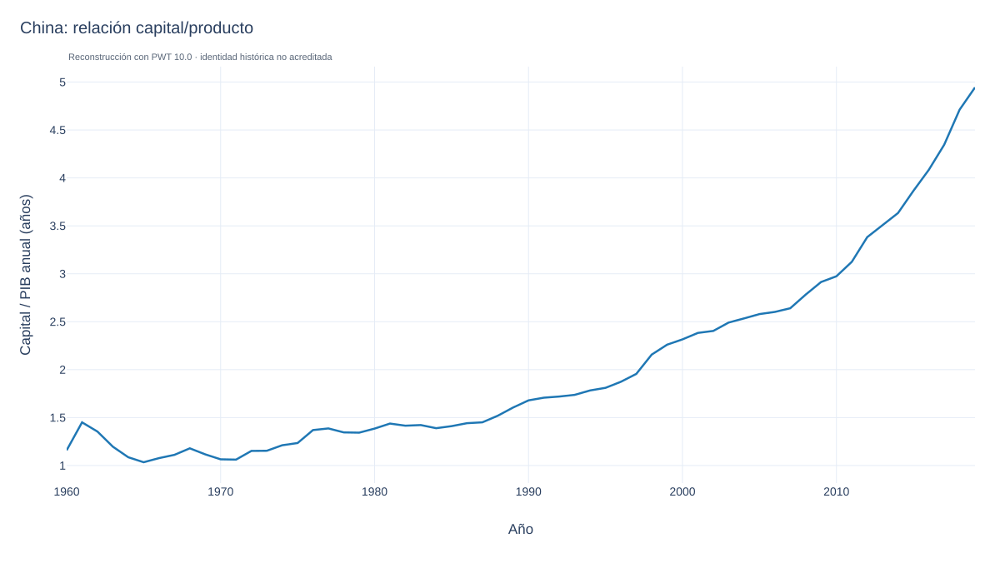
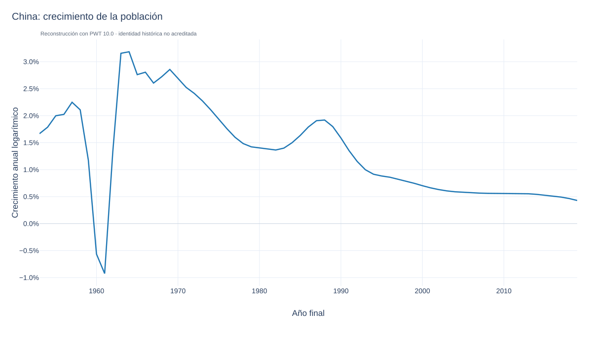
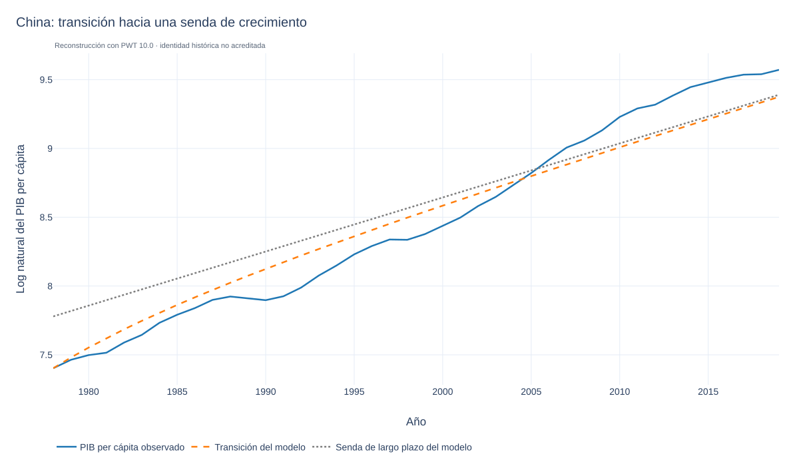
Especificación de la reconstrucción: La transición de Solow se calibra a China en 1978–2019 con α=0.3 y δ=0.05. La inversión usa el promedio de csh_i; población y productividad residual se calibran con los extremos del periodo. La trayectoria del modelo se distingue de los datos observados.
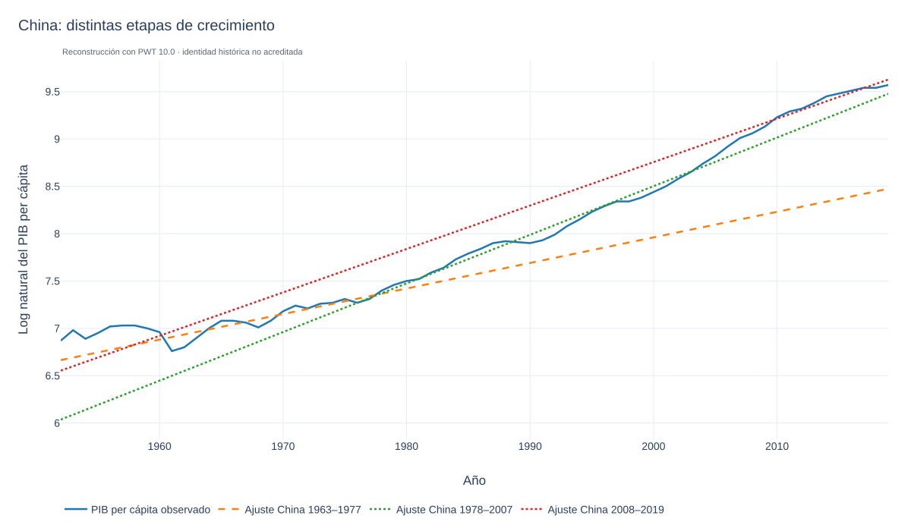
Especificación de la reconstrucción: Se comparan tendencias OLS de China en 1963–1977, 1978–2007 y 2008–2019. Estos cortes son decisiones explícitas de la reconstrucción.
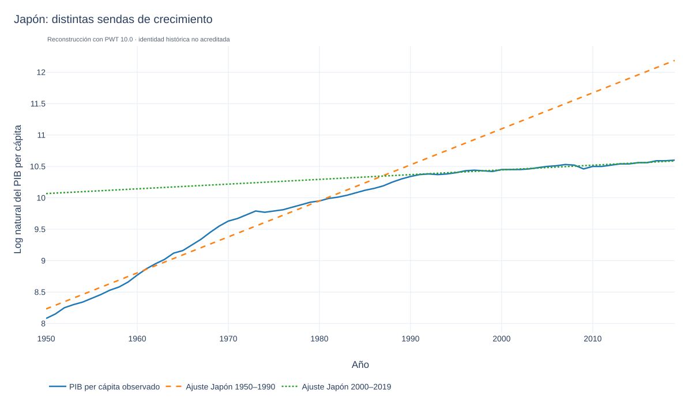
Especificación de la reconstrucción: Se compara el PIB per cápita de Japón con tendencias OLS ajustadas a 1950–1990 y 2000–2019. Las ventanas son una adaptación documentada, no especificaciones recuperadas del gráfico original.